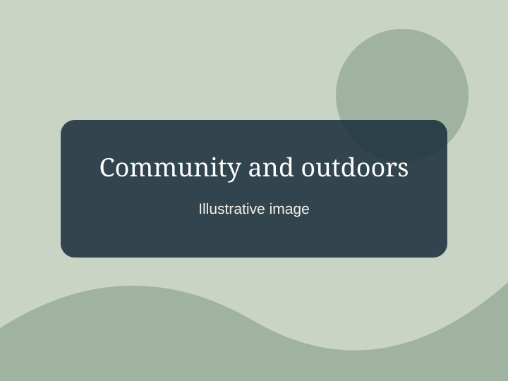

Roots. Music. Giving back.
Morgan Wallen
A story connecting Tennessee roots, a growing music career, and a lifelong connection to baseball.
From early musical interests and time on the baseball field to country music performances and community support, explore three chapters of Wallen's story.
Explore his storyThree chapters of his story

Giving back
His foundation has supported youth sports, including baseball field improvements in Chicago.
Read the storySupporting the next generation
Learn how sports, music, and community support connect through the Morgan Wallen Foundation.
Explore the Morgan Wallen Foundation